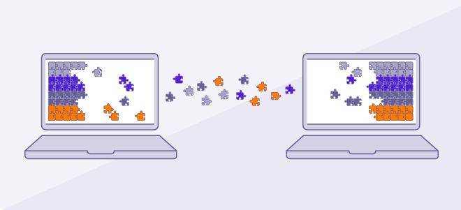
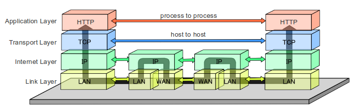

Les protocoles
L'abondante diversité des méthodes de communications réseau amena un besoin d'uniformisation. Robert E. Kahn recruta Vinton G. Cerf de l'université Stanford dans le but de travailler ensemble sur ce problème. En 1973, ils avaient déjà réalisé une reformulation
profonde, dans laquelle les différences entre les protocoles s'estompaient par l'utilisation d'un protocole de communication : au lieu d'asseoir la fiabilité du réseau sur les connexions, comme avec l'ARPANET, les hôtes en étaient maintenant
responsables. Vinton G. Cerf attribua à Hubert Zimmermann et Louis Pouzin (développeurs du réseau Cyclades) un important travail de développement.
Avec le rôle du réseau physique réduit à son strict minimum, il devint alors possible de fusionner à peu près tout type de réseau sans tenir compte de leurs caractéristiques et ainsi résoudre le problème que s'était posé Robert E. Kahn à ses débuts. La
DARPA accepta de financer le développement du logiciel prototype, et après plusieurs années de travail, la première démonstration quelque peu rustique de ce qu'était alors devenu le TCP/IP eut lieu en juillet 1977. Cette nouvelle méthode
se répandit au travers des réseaux, et le 1er janvier 1983 les protocoles TCP/IP devenaient officiellement le seul protocole sur l'ARPANET, remplaçant le précédent protocole NCP (RFC 801).
En effet, le TCP/IP est une suite de réseaux et de protocoles utilisés pour le transfert de données sur Internet.
IP est la partie qui obtient l'adresse à laquelle les données sont envoyées. TCP est responsable de la livraison des données une fois que cette adresse IP a été trouvée. Pour cela, le TCP/IP décompose chaque donnée en paquets, qui sont ensuite réassemblés à la destination. Ainsi, chaque paquet peut emprunter un itinéraire différent vers l'autre ordinateur, si le premier itinéraire n'est pas disponible ou est endommagé.
IP est la partie qui obtient l'adresse à laquelle les données sont envoyées. TCP est responsable de la livraison des données une fois que cette adresse IP a été trouvée. Pour cela, le TCP/IP décompose chaque donnée en paquets, qui sont ensuite réassemblés à la destination. Ainsi, chaque paquet peut emprunter un itinéraire différent vers l'autre ordinateur, si le premier itinéraire n'est pas disponible ou est endommagé.

Son modèle est divisé en quatre couches distinctes. Utilisées ensemble, elles peuvent également être appelées une suite de protocoles.
-
Couche de liaison de données
La couche Internet, également appelée couche réseau, contrôle le mouvement des paquets sur le réseau. -
Couche Internet
La couche transport fournit une connexion des données fiable entre deux appareils. Elle divise les données en paquets, accuse réception des paquets qu'elle a reçus de l'autre appareil et s'assure que ce dernier accuse réception des paquets qu'il reçoit. -
Couche transport
La couche transport fournit une connexion des données fiable entre deux appareils. Elle divise les données en paquets, accuse réception des paquets qu'elle a reçus de l'autre appareil et s'assure que ce dernier accuse réception des paquets qu'il reçoit. -
Couche application
La couche application est le groupe d'applications nécessitant une communication réseau. Il s'agit généralement de l'application avec laquelle l'utilisateur interagit, comme les e-mails et la messagerie. Parce que les couches inférieures gèrent les détails de la communication, les applications n'ont pas besoin de s'en préoccuper.
